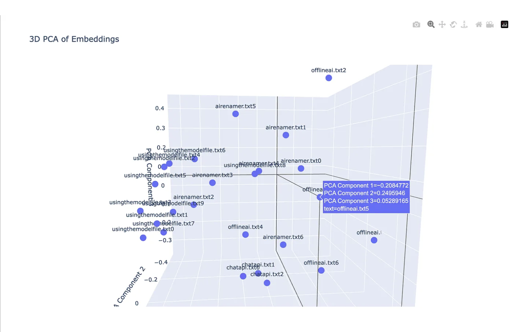

DevOps Intelligence Platform
Data Processing Architecture — 8 Layers
Execution Metadata
Raw Logs (Azure)
Git Repo
↓
"Fetch the raw data"
Execution metadata99 executions, statuses, durations, step info
Azure log filesbuild.log · securityTests.log · deploy.log
Gitfile contents, commit history, diffs
"Structure the raw data"
10,000 log lines→ error_type missing_npm_module
→ error_message Cannot find module 'react-router'
→ key_lines [3 most relevant lines]
"Connect the dots between sources"
execution 8157337failed at build
+ commit abc123ran before it
+ commit touchedui.frontend/package.json
= resultprobable cause attached to the failure
"Remove noise, keep signal"
99 executions→ top 5 failure patterns
10,000 log lines→ 5 diagnostic lines
50 scan findings→ 10 critical ones
~80% of tokens cut here
"Build one clean package per feature"
Failure Reportgets failure patterns + error summaries
Risk Assessmentgets commit metadata + historical failure rates
Pinpointgets one execution log + relevant code files
Static Scangets codebase files + known CM antipatterns
Vector DB — RAG (ChromaDB)
"Have we seen something like this before?"
Querycurrent failure pattern + affected modules
Returnstop matching historical failures with similarity scores
Resultinjected into context before the LLM call
"Tell the AI what to do and how to answer"
System promptrole + output schema + constraints + example
User promptcompressed context + RAG matches
Key constraintnever invent numbers — all stats come from data
"Send to AI with the right settings per feature"
Failure Reporttemp 0.2 · 3000 tokens · pattern synthesis
Pinpointtemp 0.0 · 800 tokens · exact precision
Risk Assessmenttemp 0.0 · 1500 tokens · analytical
JSON output
"Validate and structure the AI's answer"
AI response→ Pydantic model validation
If fails→ auto retry with schema shown again
If passes→ clean typed object, no raw strings
Clean Structured Output
FailureReport
RiskReport
PinpointReport
ScanReport
every output stored back into ChromaDB — becomes RAG memory for future analyses
Vector DB — Embeddings Visualisation
3D PCA of all stored failure embeddings in ChromaDB — each dot is one indexed failure record, clustered by semantic similarity
